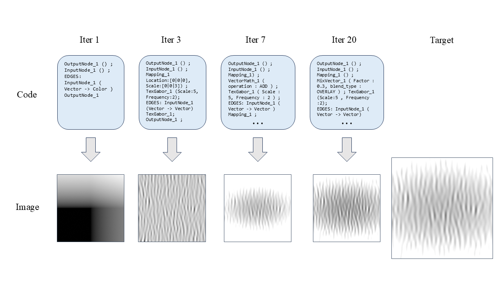
Program synthesis is the reconstruction of a program from a sample output, and is considered a fundamental and unsolved problem in AI research. In this work, we present a neural-guided search method for program synthesis. We train a transformer encoder that, given a current program state and a target specification, outputs a probability distribution over all candidate edits to that program in a single forward pass. These edit probabilities guide tree search algorithms to iteratively refine the program toward the target. We demonstrate our approach on procedural texture synthesis in Blender: given a target texture image, the system searches for the node tree that produces it. While we focus on this domain, the method is applicable to program synthesis more broadly.
Blender is an open-source 3D graphics application that supports procedural modeling and texturing workflows. Procedural textures are generated by shader node trees—directed graphs where each node applies a mathematical function (noise, Voronoi, gradients, color mixing) and passes its output to the next. The entire tree takes coordinates as input and produces a texture as output. For our purposes, this node tree can be represented as textual code: a list of nodes with their parameters, plus edges connecting them.
Our goal is to train a model to reverse-engineer this process: given a target texture, recover the node tree (or equivalently, the code) that produces it. This is an instance of program synthesis, where the goal is to find a program that matches a given specification. With dozens of node types, continuous parameters, and arbitrary graph structures, the number of possible programs grows combinatorially, creating an enormous search space.
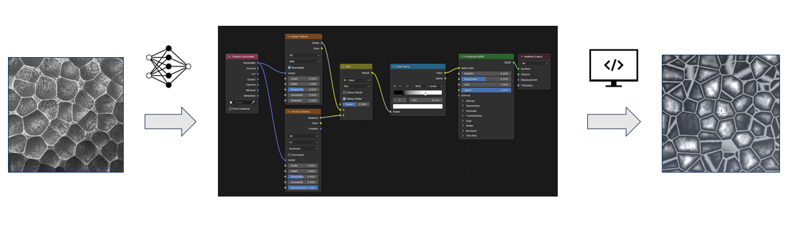
Our approach uses a transformer encoder to guide the search. The model takes as input: a tokenized code of a current program, a target image, and the current image (rendered from the current program). Image embeddings are produced by a CNN.
The model produces two outputs. From the CLS token, it outputs V(s)—an estimate of how close the current program is to the target. From each program token, it outputs P(a|s)—a probability distribution over all actions. This means a single forward pass proposes edits across the entire program simultaneously.
The action labels are general (e.g., "remove node," "increase parameter," "add Voronoi node"), but their meaning is determined by the token to which they are applied. For instance, "remove node" applied to a Noise node token means removing that specific node from the program; "add Voronoi node" applied to an edge token inserts a Voronoi node at that connection. In this way, a fixed set of action labels represents all possible edits to the program.
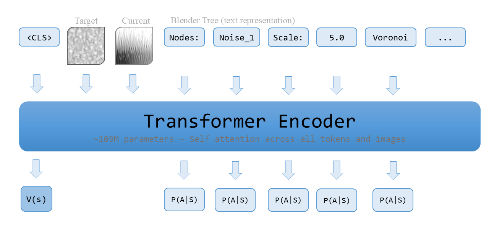
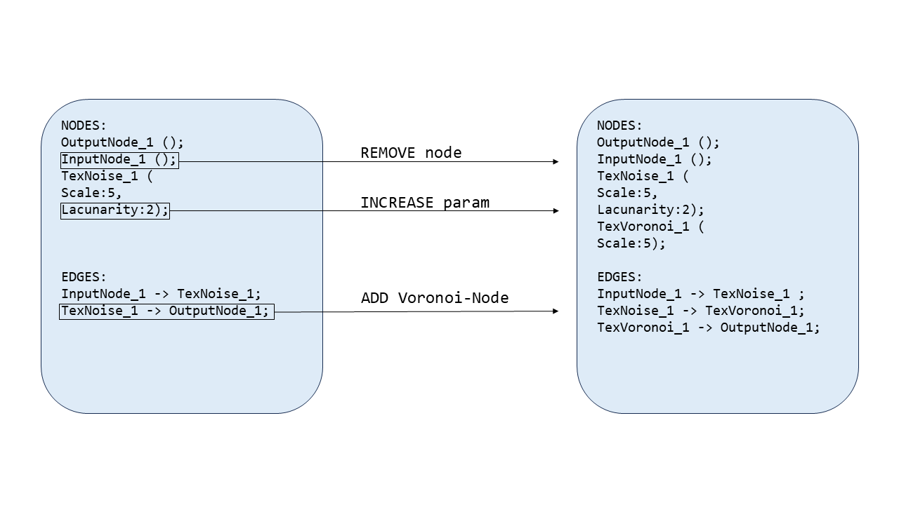
To train the model, we automatically generate a synthetic dataset of programs and the transitions between them. Starting from empty programs, we apply random edits (adding nodes, removing nodes, changing parameters) and record each resulting program state along with its rendered texture. This produces a network-dataset where each node represents both a program and its associated texture, and edges are the actions that transform one program into another.
For training, we sample pairs of states from this network: one serves as the current state, the other as the target. The model is trained to predict the single edit that moves closest to the target. In this way, the model learns to traverse the network of program states.
The V(s) output is trained to estimate the distance between the current state and the target, based on their distance in the network-dataset, normalized to a value between 0 and 1.
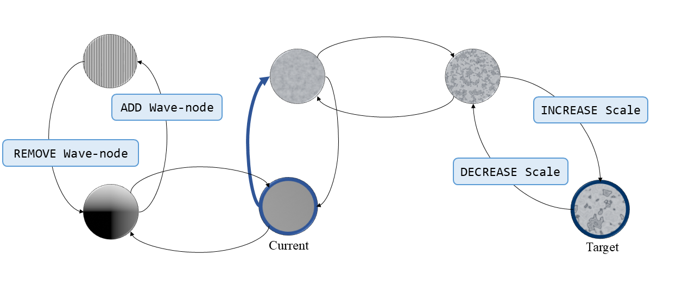
At inference time, we use the trained model to guide a search through the space of programs. We begin with an empty program (where the input is directly connected to the output). The encoder processes this state along with the target image, producing action probabilities for each token and a value estimate V(s). Based on these probabilities, we select a subset of actions and generate new program states. This expansion continues iteratively.
After a fixed number of expansions, we select the best program found. To evaluate candidates, we use a separately trained Siamese network that scores the similarity between two textures.
We explored two strategies for selecting which actions to expand:
We compute an expected value for each candidate action, then sample actions with probability proportional to these values:
\[\text{expected\_value} = V(s_{\text{parent}})^2 \cdot P(a)\]
We use a variant of Monte Carlo Tree Search. Our formulation balances exploitation of high-value paths with exploration of less-visited ones:
\[\text{score} = \underbrace{\frac{V_{\text{total}}}{N}}_{\text{exploitation}} + c_{\text{puct}} \cdot \underbrace{P(a) \cdot \frac{\sqrt{N_{\text{parent}}}}{1 + N_{\text{child}}}}_{\text{exploration}}\]
At each iteration, we select the highest-scoring actions until reaching \(k\) nodes for expansion.
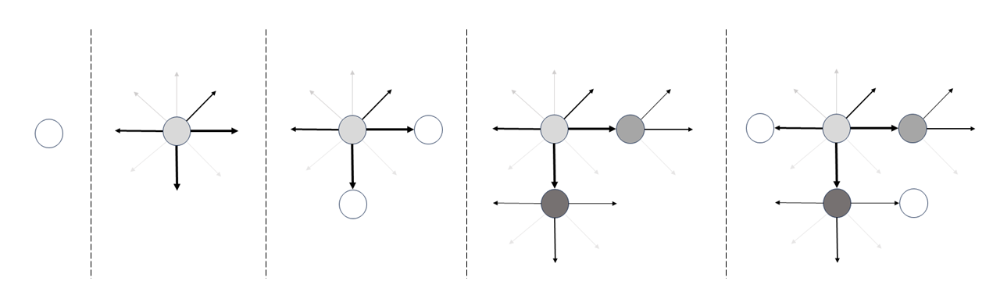
We trained our encoder (~109M parameters) on 1 million examples sampled from a network of 100,000 synthetically generated textures. For comparison, we also trained a decoder model (~112M parameters) to directly generate programs from images, representing a standard program synthesis approach without search.
We evaluated on two test sets: 184 held-out textures (generated similarly to training data) and 48 new textures (sourced externally, not generated in Blender).
| Method | Test Set | Similarity | Time (s) |
|---|---|---|---|
| Decoder (2 samples) | Held-out | 0.49 | 3.6 |
| Decoder (20 samples) | Held-out | 0.81 | 24.3 |
| Sample (30 expansions) | Held-out | 0.84 | 3.3 |
| MCTS (30 expansions) | Held-out | 0.85 | 2.7 |
| Decoder (2 samples) | New | 0.38 | 3.6 |
| Decoder (20 samples) | New | 0.73 | 24.3 |
| Sample (30 expansions) | New | 0.76 | 3.4 |
| MCTS (30 expansions) | New | 0.78 | 2.9 |
Benchmarked on an RTX 5070.
For comparable compute time, the encoder-search methods achieve superior results. Given enough samples, the decoder can approach our method's similarity scores, but requires an order of magnitude more compute. Our encoder evaluates P(a) for all possible actions for up to 12 candidate states in parallel per forward pass (~0.1s).
A caveat: our method requires rendering the texture at each expansion step, which adds overhead not reflected in these timings.
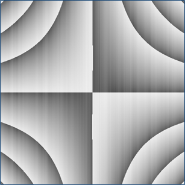
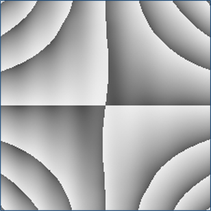
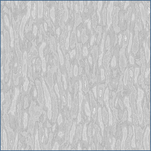
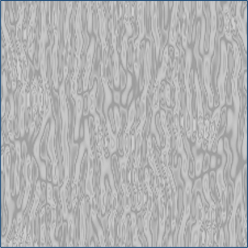
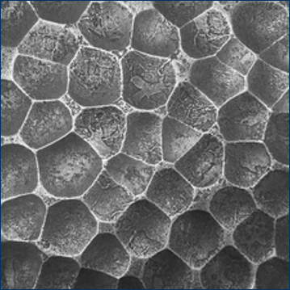
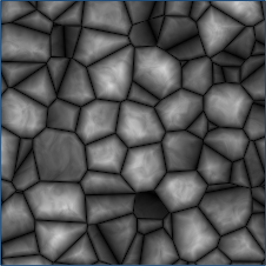
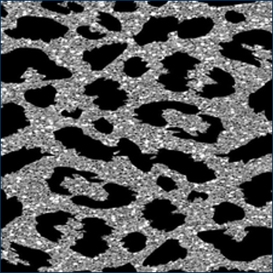
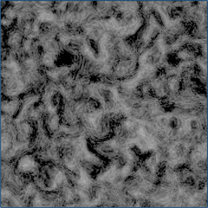
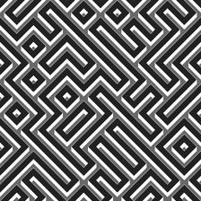
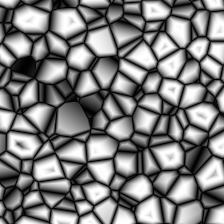
A natural extension of this approach is to use MCTS-generated data to further train the model, similar to AlphaGo's self-play training loop. The MCTS search can be applied to completely new textures, generate trajectories, and use successful trajectories to train the model.
We attempted this, but it did not improve performance. The training was unstable, with the model's performance fluctuating and slightly declining over time.
The core difficulty is that unlike board games, there is no clear winner or loser. In AlphaGo, the outcome of a game provides an unambiguous training signal. In our setting, we only have continuous similarity scores, and we cannot know whether an unexplored branch might have led to a better solution. Our attempts to adapt the RL to this setting were not effective, and this remains an open problem for future work.
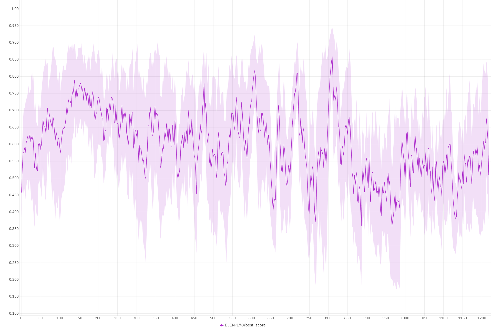
This work is a proof of concept, not a complete solution to procedural texture synthesis. The textures our method can generate remain relatively simple, though even in this constrained setting the search space is vast.
A core limitation lies in dataset generation. Randomly sampling edits produces mostly nonsensical programs: approximately 20% of generated textures were nearly empty images. While this does not prevent training (the model learns to produce these textures alongside meaningful ones), it means much of the data is wasted. Future work could explore smarter program generation strategies that better cover the space of useful, realistic textures.
Other directions for future research include scaling to more complex programs, improving the RL training loop, and applying this approach to other program synthesis domains beyond procedural textures.